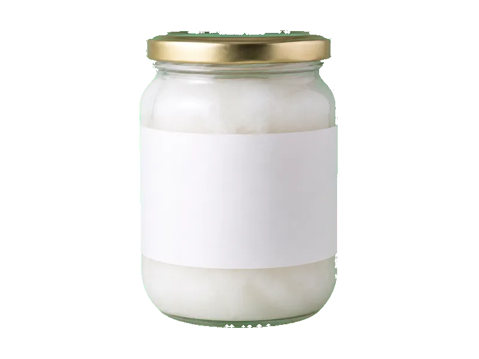

Tłuszcze i oleje
Olej kokosowy
Olej kokosowy: 0 g białka, 862 kcal, 0 g węglowodanów i 100 g tłuszczu na 100 g. Kategoria: Tłuszcze i oleje.
Kalorie862 kcalna 100 g
Białko / proteiny0 g
Węglowodany0 g
Tłuszcz100 g
Cena (szac.)~3,00 złza 100 g
Ceny zaktualizowano: maj 2026 (szacunek — ceny w popularnych supermarketach)
Porcja: łyżka (10g)
| Kalorie | 86 kcal |
|---|---|
| Białko | 0 g |
| Węglowodany | 0 g |
| Tłuszcz | 10 g |
| Cena (szac.) | ~0,30 zł |
Szczegółowe składniki odżywcze na 100 g
| Wartość energetyczna (kalorie) | 862 kcal |
|---|---|
| Białko (proteiny) | 0 g |
| Węglowodany | 0 g |
| Tłuszcz | 100 g |
| Tłuszcze nasycone | 87 g |
| Tłuszcze nienasycone | 13 g |
| Witaminy i minerały | Witamina E, Witamina A, Witamina K |
| Współczynnik kcal / 1 g białka | — |
| Cena produktu (szac. za 100 g) | ~3,00 zł |